vamo, vamo, vamo…
Ana Shibata
Sou advogada, mãe, esposa, amiga, companheira. Há algum tempo pretendia sair do sedentarismo e assim foi com aulas de yoga, depois academia para baixar o colesterol e numa inscrição para uma corrida feminina feita mais pelo kit (sem nunca ter corrido ou treinado) o bichinho do quero mais me pegou e, agora trilho por este caminho tendo como mantra "Mens sana in corpore sano".
Home page: http://urbi-orbi-trek.blogspot.com/
Posts by Ana Shibata
5ª CORRIDA & CAMINHADA DROGA MATA & ESPORTE SALVA
75 years
by Ana Shibata
in Ex-sedentário
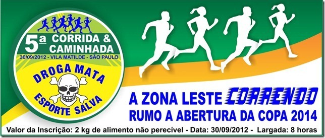
Venha e traga sua família para participar da 5ª Corrida & Caminhada Droga Mata & Esporte Salva!!!
DIA DO EVENTO – 30/09/2012
VALOR: 02 KILOS DE ALIMENTOS
Horário da Largada: 8h00
Distância dos Percursos: – Corrida: 5 Km
– Caminhada: 3 km
PUBLICO ALVO: adultos, menor acompanhado pelo responsável
Local da Largada e Chegada: Av. Bernardino Brito Fonseca de Carvalho
Horário da Concentração dos Atletas: a partir das 6h00 na Av. Bernardino Brito Fonseca de Carvalho – Praça Lions – Esquina com a Av. Radial Leste.
Entrega do Kit:– Dia 29/09/2012 a partir das 9h até as 18h na Sociedade Amigos de Vila Matilde – Rua Dona Matilde, 829 – (Centro da Vila Matilde – perto da Praça da Toco) Tel.: 2651-9715.
– Dia 30/09/2012 a partir das 6h no local da prova.
Para a retirada do Kit será necessário apresentar:– E-mail recebido da confirmação da inscrição (impresso)
– Documento de identidade ou CPF
– 2 kg de alimento não perecível (menos sal e açúcar)
Acesse e faça sua inscrição através do link: http://www.infoleste.com.br/corrida/
SITE DO EVENTO: http://www.drogamata.com.br/
Já efetuei a minha inscrição e de família, venha vc também e ajude esta campanha!!!
CORRIDA E CAMINHADA DROGA MATA & ESPORTE SALVA
136 years
by Ana Shibata
in Ex-sedentário
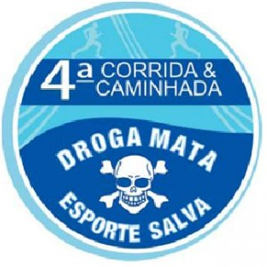
VAMOS ABRAÇAR ESTA CAUSA?!
Acontecerá no dia 18/09, a 4ª CORRIDA E CAMINHADA DROGA MATA, então anote e divulgue para os amigos:
DIA DO EVENTO – 18/09/2011
LARGADA: 8h
LOCAL: CENTRO DA VILA MATILDE – SÃO PAULO
200 METROS DO METRÔ GUILHERMINA.
PERCURSO 5KM Corrida de rua
2KM Caminhada
PUBLICO ALVO: adultos, menor acompanhado pelo responsável
INSCRIÇÃO E MAIORES INFORMAÇÕES: corridadrogamata@terra.com.br (enviar e-mail solicitando ficha de inscrição)
VALOR: 02 KILOS DE ALIMENTOS
SITE DO EVENTO: http://www.drogamata.com.br/
Já efetuei a minha inscrição e de família, venha vc também!!!
Ana Maria
Hoje é dia ….
56 years
by Ana Shibata
in Ex-sedentário
PARABÉNS HOJE É SEU DIA……..
QUE DIA MAIS FELIIIIIIIIIZ
Pois é gentemmmmmmmmmmm, hoje é dia do Claudião assoprar mais uma velinha,
Desejo-lhe muiiiiiiiiita saúde, paz, amor, harmonia, dindim no bolso e,
principalmente,
muitos km e provas
Um abração!
Ana Maria
19ª Maratona Pão de Açúcar de Revezamento de São Paulo
67 years
by Ana Shibata
in Ex-sedentário
Chamada Geral!!!
PRIMEIRA: KD ESSA TURMA DE SEDENTÁRIOS ?!
SEGUNDA:
Já estão abertas as inscrições para a 19a Maratona de Revezamento PA que será realizada no dia 18 de setembro de 2011, às 7h. A largada acontecerá na Av. Pedro Álvares Cabral, próxima ao Obelisco do Ibirapuera, São Paulo.
As equipes poderão ser composta por 2, 4 e 8 atletas.
As inscrições antecipadas terão desconto, veja abaixo:
Até 26/05/2011 = R$ 55,00 cada participante
Até 30/06/2011 = R$ 60,00 cada participante
Até 18/08/2011 = R$ 65,00 cada participante
A partir de 19/08/2011 = R$ 75,00 cada participante – para vagas remanescentes.
Claudião está pensando num mega empreendimento…….. hummmmmmmmm, será que falo (ops….escrevo)?!
Link do evento: www.maratonapaodeacucar.com.br
Ana Maria
Não leve a vida tão a sério
57 years
by Ana Shibata
in Ex-sedentário
Desculpe me intrometer na sua vida assim tão diretamente.
Não sei se é o caso de entrar nesse assunto agora mas vou tomando a liberdade de amiga pra dizer:
Será que alguém muito especial, não anda meio esquecido de sua agenda?
Sabe quem?
Essa pessoa está olhando para a tela agora.
É… Você mesmo!
Está tudo bem ou a comunicação interna anda complicada?
Você quer fazer uma coisa, faz outra?
Quer dizer algo pra alguém e acaba falando uma bobagem?
Ou, pior, quer falar de paz e…
Acaba entrando em guerra e arrumando mais problemas?
Você está dando a devida atenção para os seus sentimentos?
A vida não precisa ser levada tão a sério!!
Pegue leve com você e com os outros.
Não entre nessa de levar tudo a ferro e fogo…
Descontraia sempre que a corda estiver muito tensionada pois se arrebentar não tem mais jeito.
Ria, ria muito, ria sempre – com os amigos…
Com seu cachorro, com o que for – e principalmente ria de si mesmo.
Rir refresca a alma e lubrifica a mente.
Olhe para dentro de si e acredite:
Você é uma pessoa única e especial!
Respeite-se.
Dê valor aos seus sentimentos.
Acorde a sua confiança e a sua fé.
Como dizia Oscar Wilde:
“A vida é importante demais para ser levada tão a sério”. (anônimo)
Um final de semana esplendoroso!!!
Trekking em família
47 years
by Ana Shibata
in Ex-sedentário
Na semana passada resolvi fazer a inscrição para o Circuito Trekking. Achei interessante essa modalidade de esporte, pois poderia envolver toda a família. Sobre a definição de trekking veja meu link http://urbi-orbi-trek.blogspot.com/
Hoje acordamos cedo, o dia estava nublado, mas sem chuva, ainda bem, porque fomos dormir no sábado com muita chuva.
Saímos de casa às 7hs em direção a Itu, onde seria realizada a prova. O transito estava tranqüilo e como estimado no Google fizemos o percurso em 1h20min
.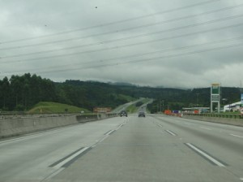 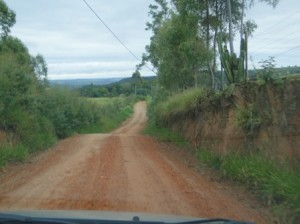
Encontramos o tempo também nublado, mas com nuvens claras. Aproveitamos e tomamos um novo café da manhã, vez que teríamos longas 4 horas até o retorno.
Já tinha visto no site que a prova se resumiria a 10 equipes participantes, grupo pequeno e no refeitório encontramos a maioria deles. Ressalte-se somente nos éramos novatos.
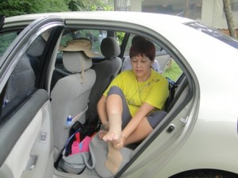 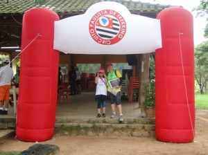
No horário determinado fizemos o check in, testamos nosso coletor de dados portátil
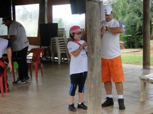
sanei as dúvidas restantes com o organizador e tentei traçar nossa rota, aliás, já no papel não parecia ser tarefa fácil,
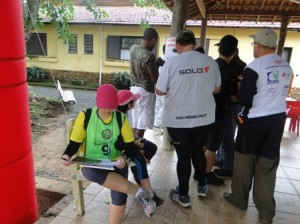
Dado o nosso horário de largada, seguimos pela trilha
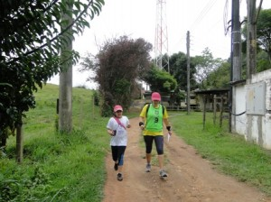 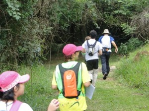
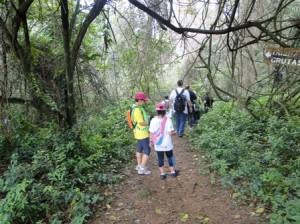
Olhar no mapa para localizar o Posto de Controle, localizar a trilha, andar olhando com bastante atenção para encontrar a fita laranja com o chip onde validaríamos nossa passagem encostando o coletor de dados portátil. O percurso consistia em trilhas, algumas sinalizadas, outras mato a dentro, com subidas e descidas. As rotas nada em sequencia, ir e voltar pelo percurso era normal.
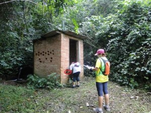
Syssi chipando o PC 4
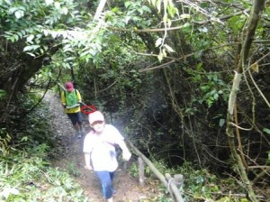
+ um PC alcançado
Assim, o maridão foi de fotógrafo, fui por livre e espancanda vontade incumbida de ser a navegadora da equipe e Syssi ficou com o coletor portátil. Não é nada fácil a tarefa de ser navegadora, então é correr as trilhas vendo o mapa, referência do PC, o tempo para apreciar a natureza quase não sobrou
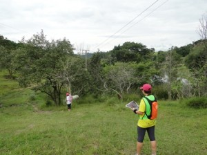
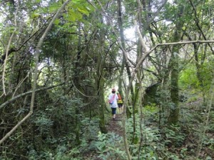
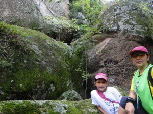
Muitas vezes era chipar e voltar, encontrar as equipes indo e vindo.
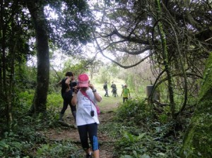
Nos postos obrigatórios, também havia tarefa a ser realizada, uma delas o maridão foi até o meio do lago, pegar uma garrafa que continha uma equação, resolver, dizer o resultado alto, depois que desembarcasse a equipe unida deveria gritar o nome da equipe. O maridão acertou a equação!
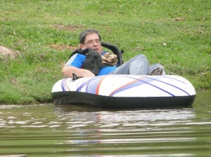

No outro posto, uma prova de lógica que eu resolvi.
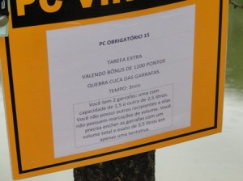
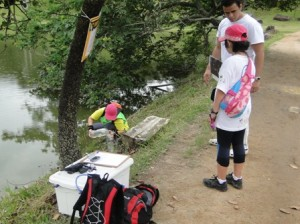
Até este momento apesar de não haver sol, o mormaço era muito forte, já estávamos na metade do percurso. Agora era encarar uma boa subida e procurar os PC, mas o tempo começou a virar e a chuva vinha de forma tímida. Enquanto estávamos na mata não foi preciso usar capa de chuva, este foi nosso último momento seco, pois depois a chuva ficou intensa e, como estávamos suados e calorentos, a chuva foi bem vinda, dando um toque especial à prova.

Não conseguimos percorrer todos os PC’s e nem quero fazer as contas agora. Enfim alcançamos o posto de chegada um tanto quanto molhados, mas não tão cansados.
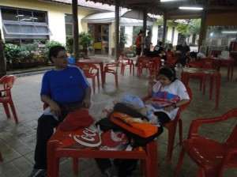
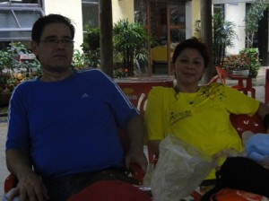
O resultado só sairá na terça, sei que não fomos bem, mas foi uma aventura hiper legal. Se nas corridas a realização é pessoal, apenas eu contra meu próprio tempo, deixando eles na espera, no trekking todos participam, a união e envolvimento é bastante cultivada, até porque existe penalidade para equipe dispersa.
No final o maridão aprovou, Syssi teve seu envolvimento na prova e eu curti muito, já que adorei correr nas montanhas.
Mais um domingo legal……..
Chamada!!!
17 years
by Ana Shibata
in Ex-sedentário
Por onde andam CLAUDIO e MELINHA?!
Uma simples corridinha pelas montanhas já fez todo esse estrago de não poder postar nada sobre a prova????
Acho que vcs ainda SÃO sedentários!!!!
Estamos aguardando suas postagens…………………enquanto eu procuro novas aventuras!!!!!!!!!!!
Estréia em Corridas de Montanha
67 years
by Ana Shibata
in Ex-sedentário

P A U L E I R A!!!!!!!!!!!!!!!!!!! (pensamento que me ocorreu para abrir este post enquanto eu corria a metade do percurso)
Vamos ao início:
Para participar da prova nessa modalidade que aconteceu em Paranapiacaba precisei comprar um tênis específico de montanha e que pudesse usar também em travessias com água. Após troca de e-mails com o site de venda comprei meu tênis.
Esclareço que o fiz não por puro consumismo, e eu que no ano passado nem tinha conhecimento de tipos de tênis e etc…. (post de estréia neste blog), mas como venho de uma recuperação de rompimento de 2 ligamentos, mais o fato da orto ter me advertido que em qualquer corrida eu deveria usar faixa para prevenção de nova lesão, comprei a faixa e há 2 semanas adquiri tênis próprio para essa corrida.


Sábado de manhã partimos para Paranapiacaba, aqui em Sampa o dia estava quente e abafado. Chegando a Ribeirão Pires o tempo começou a mudar, estava nublado com um pouco de neblina.
Chegamos a nosso destino, estacionamos e ajeitamos as tralhas. Eu levei uma muda de roupa limpa, toalha, bolachas para a Syssi e Igor, água, kanga para estender em algum gramado para esticar os esqueletos, Sy levou jogo de cartas, enfim, uma mochilinha básica de domingo no parque, para entreter quem ficaria nos aguardando já que eu sequer tinha noção do meu tempo de percurso.
Quando estávamos nos encaminhando para o Mercado Antigo, local de concentração da prova, ao acaso ouço um cumprimento efusivo, chegava o Claudio, Alex e Elis, se tivéssemos combinado local não teria dado tão certo!


Finalmente eu conheceria a pessoa Elis, companheira de treinos do Claudio, parceira de algumas corridas do Paulo Mota, agora Baleia, comentarista de meus post e eu os dela. Maravilhoso encontro, aquela amizade de net agora era real, tanto ela como eu nos encantamos pela cidade, apesar de pequena e parada no tempo tem uma paisagem nostálgica. Quando chegamos perto das 13h já estava baixando um fog parecido com aquela cena dos filmes londrinos. Apesar do fog presente naquele momento e que perduraria até a largada, não estava frio, ao contrário, eu sentia calor, estava abafado.


Assistimos e prestigiamos a largada do percurso longo, pois Elis estaria correndo nesta modalidade. Enquanto aguardávamos Melinha me perguntou se iríamos atravessar com água pelo peito porque ouviu alguém comentando, não li nada a respeito, no regulamento dizia apenas trechos com água, mas havia lido comentários que na prova do ano passado choveu muito os riachos tiveram seu volume aumentado e, que talvez não fosse tudo isso de água.

Alguns minutos depois é anunciada a concentração para o percurso curto, naquele momento o fog era intenso, mal podíamos ver além de 30 passos à frente. Andamos cerca de 2k, quando estávamos descendo vimos uma leva de corredores retornando, a largada seria no posto de hidratação (5k do percurso curto). A confusão estava instalada!
Ouvi o som da voz de alguém pedindo desculpas pelo transtorno….. e que tinha trabalhado a semana toda no percurso…….. que precisaríamos aguardar uns 2 min mais, o resto não consegui ouvir. Não preciso comentar que não havia portal de largada e sequer cronometro neste marco.
Dada a largada enfrentamos uma descida acidentada, cheia de pedra brita solta. No começo corri no mesmo passo de Melinha, Alex e Claudio, mas vi uma brecha e me desgarrei do grupo, pensei que se eu soltasse agora o freio seria melhor, porque nos trechos de água e trilhas talvez eu fosse mais devagar… por ai fui, no final da descida viramos a direita e pé na lama!…….. uau, uma trilha e logo a seguir lama pura, nas primeiras pisadas meu tênis ficou na lama, o pé veio sem calçado, tive que espichar para conseguir calçá-lo e correr pela trilha a fora, escorreguei muito, depois veio o 1º trecho com água, só ouço o Claudiao gritando e pumba, vai de bunda mesmo, escorrega e cai na água, deslancha e o perco de vista. Só tivemos um trecho de água que estava no nível da trilha, em todos os demais a ribanceira era razoável em que você precisava pular ou escorregar devagar para cair no riacho.
Até ai tudo beleza!!! Consegui correr legal nas trilhas lamacentas e atravessar os riachos, eis que chega um percurso em que só pular no riacho não era o suficiente, precisaríamos andar por ele, a água estava lamacenta o que dificultava ver o fundo, restava apenas tatear com o pé e seguir…… a água batia na cintura! Pensei na Melinha com a máquina fotográfica e o cel, o meu que estava na cintura tratei de puxar a pochete para cima do peito e fui andando pelo riacho com todo cuidado quer pelo tornozelo ou para não cair; vi uma participante escorregando ao meu lado e enfiar o ombro direito totalmente na água, pensei: “muita calma nessa hora”. Atravessei o riacho, subi a ribanceira e novamente trilha.
Sem saber estaria eu agora desbravando o último percurso de água que consistiu em escalar uma pequena cascata, mas bastante inclinada. Como eu estava com um tênis que podia enfiar o pé a água fui sem medo, mas sempre procurando pisar no firme, às vezes alguns galhos ou cipós serviam de suporte sem colocar muita força neles, mais como guia. No final da cascata um staff nos diz: agora só descida. Ah, não confie jamais!! Decerto que realmente tinha uma descida, mas não era só descida, as subidas eram igualmente consideráveis as descidas.
Enquanto o percurso na trilha com água era paisagem de muita vegetação alta, o restante do trajeto, após a cascata, foi de trilha aberta, terra vermelha menos úmida. Detalhe, o sol e mormaço estavam mais presentes, não havia vegetação para fazer muita sombra. O terrível o fato de que desde a largada não tivemos nenhum posto de hidratação, acho que a organização pensou que pelo fato de estarmos atravessando os riachos não daria sede, e caso ocorresse, era só abaixar e beber água lamacenta?!
Continuando as descidas íngremes Alecão conseguiu me alcançar, perguntei por Melinha e fui informada que estaria uns 10/12 min atrás, comentamos sobre a falta de posto de hidratação e, como ele tinha mais pernas foi embora.
Segui meu ritmo, passei por uma torre de transmissão e bem adiante outra, como era clareira deu para ver o quão alto estávamos neste momento pensei na palavra que inicia este texto, pensei na falta de água e o quanto faltava para chegar no 5k, o que representava posto de hidratação. Enfim chegava ao 5k, o que representava também o final das trilhas. Pego um copo de água, imagino que falta 2k para o final, vejo no cronometro já decorrido mais de hora, fixo minha meta em cruzar com menos de 2 hs, e penso: Querer é poder, se assim quero, assim eu posso!!!
Desbravo os 2k faltantes, agora em estrada de chão batido com pedra brita, disputando com veículos e bicicletas a mesma estrada. Para chegar aos últimos 100 ms precisei enfrentar uma ladeira e quase me faltou pernas, mas superada a ladeira respiro fundo e trotando cruzo a chegada, antes, ouço Syssi gritando por mim, depois vejo Claudio, Alex e Elis.
Cruzo feliz e satisfeita da vida. O tempo não era o ideal, mas para mim, com tantos entraves, foi meu Oscar da corrida.

Infelizmente depois de pegar a medalha nada de fruta, cereal ou isotônico, acabou antes da hora?! Uma cara de espanto da funcionária ao me dizer isso. Palhaçada geral!
A inscrição não foi barata para o tipo de organização apresentado. Ficam aqui divisores, um para o percurso que adorei, curti todo o trajeto e outro para a organização um circo armado cujos coadjuvantes fomos nós sem saber. Vasculhando o site do evento várias tem sido as reclamações quanto a hidratação e final de prova.
Alguns minutos depois chega Melinha que também é festejada por nós.
Meu tempo: 1h59min30seg, sem água durante 2/3 da prova, sem aditivos, somente pernas e pés.


O pós prova está muito bom, 2 arranhões no braço direito e apenas uma dorzinha na coxa mas segunda já estarei nova em folha.
Sem pensar na organização, a prova teve todo seu charme pela lama, travessia de rio, subida pela cascata, trilha, diria que uma prova-aventura sem igual!!!
Fazendo mais com menos – 64a. Corrida de Aleluia
37 years
Para aqueles que não irão emendar o feriado prolongado de Páscoa e estão dispostos a passear com a família em São Roque para participar de uma corrida de rua no sábado de manhã, aliás será um evento para todos os gostos, corrida, caminhada e corrida kids, segue abaixo maiores informações:
Local: Largada e Chegada na Praça da Matriz, ao lado da Igreja Matriz – São Roque/SP.
Data: 23 /04/2011
Valor inscrição: R$ 25,00 Horário de largada: 9h (horário de Brasília).
Formas de Percurso: 8 k para os Corredores; 3 k para os Caminhantes.
Site do evento: http://www.corridadealeluia.com.br/index.html
Regulamento: http://www.corridadealeluia.com.br/regulamento.htm
- FESTIVAL DE ALELUIA
Data: 23 de Abril de 2011
Largada: Av. dos Bandeirantes
Horário de largada: 14hs
- Categoria Masculino e Feminino
a) 6 anos – 100 mts
b) 7 e 8 anos – 200 mts
c) 9 e 10 anos – 400 mts
d) 11, 12 e 13 anos – 600 mts
e) 14 e 15 anos – 1 km
- Medalhas para todos os participantes.
Inscrições Gratuitas e Limitadas
Site do evento: http://www.corridadealeluia.com.br/aleluia.htm
Treino noturno
117 years
by Ana Shibata
in Ex-sedentário
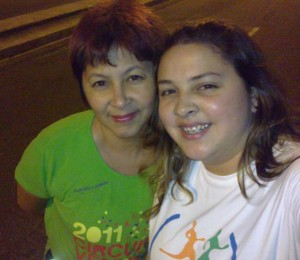
Estava fazendo algumas coisas a noite na varanda e de lá tenho uma boa visão do minhocão. O tráfego ainda ainda estava liberado para os carros, depois de alguns minutos ao dar nova espiada vejo algumas pessoas correndo, uma mãe empurrando o carrinho de bebe, uns encurtando o caminho para chegar em casa e outros andando de bike.
Passei pelo quarto da meninas e perguntei a Melinha se ela não iria treinar porque o minhocão já estava fechado ela duvidou e foi checar, eis que volta correndo me intimando a trocar de roupa para treinar, pois neste final de semana participaremos de uma corrida.
Confesso que fui sem vontade, mas ela me incentivou dizendo que não teria sol, estava fresquinho. Já na rua senti uma deliciosa brisa, o tempo realmente nos convidava a treinar.
Fizemos o percurso de ida e volta, intervalando trotes e caminhadas, nada muito forte porque Melinha está dolorida da corrida de domingo e precisa poupar-se para sábado. Eu ainda estou sem pulmão, mas não fiquei cansada, deu até para suar a camiseta.
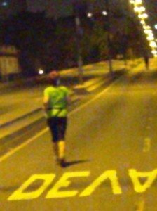 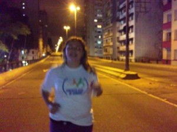
Depois de postar no blog vou dormir ao embalo das músicas de Enya satisfeita por ter desmistificado o temor de correr a noite no minhocão.
Com vossa licença, Morfeu me chama …………….. e parafraseando o Claudião, terei hoje um sono perfeito!
.jpg "DSC01777 (1024x576)")
.jpg "DSC01793 (1024x576)")
.jpg "DSC01939 (1024x576)")
.jpg "DSCN5696 (1024x768)")


Últimos comentários